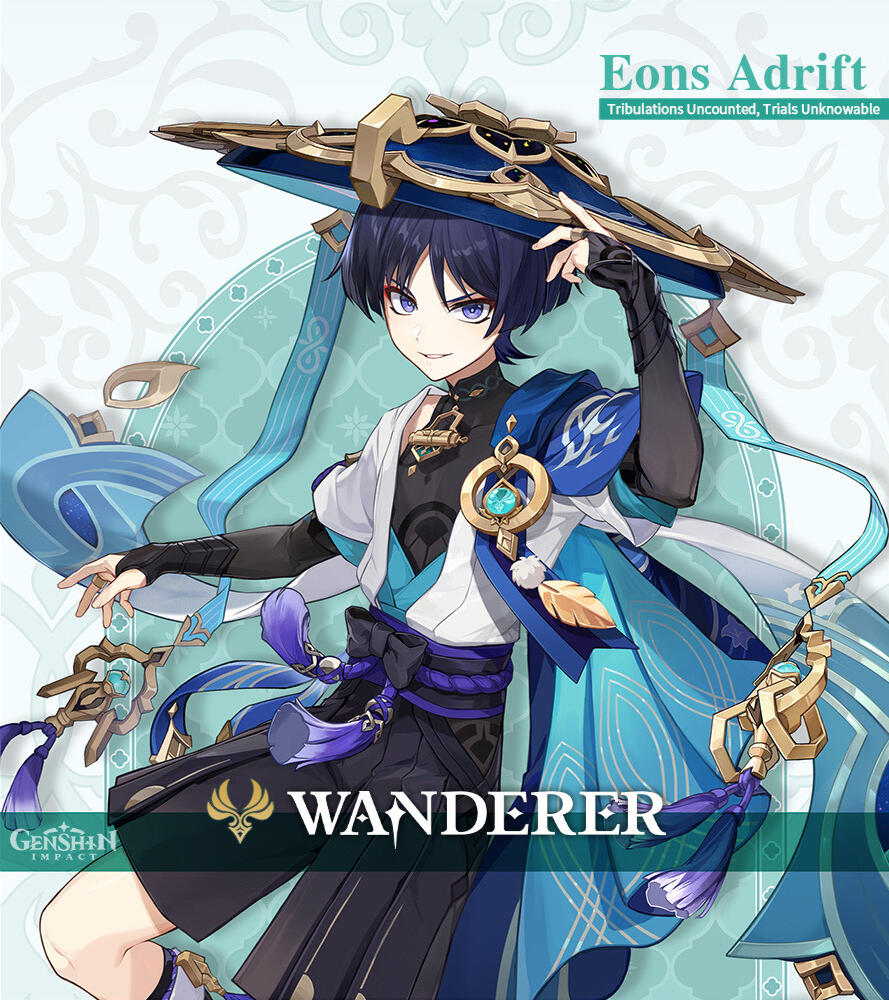
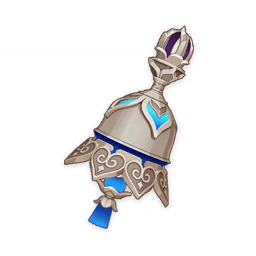

WANDERER
The Wanderer came into existence in place of his previous incarnation
after the latter expunged his previous appellations and
their respective histories from Irminsul.
Harboring his former self's memories after willingly regaining them,
"Wanderer" is now the only title he goes by, for he has no home, kin, or destination.


Drip Marketing
His current incarnation was first teased on October 31, 2022
and this was the first time players saw him in his redesign.
FUN FACT: Bohemian Rhapsody was also released
in October 31, 1975.
This song is assumed by many to be the inspiration for the
character since there are many easter eggs hinting at it,
especially, with one line literally saying his name.
and this was the first time players saw him in his redesign.
FUN FACT: Bohemian Rhapsody was also released
in October 31, 1975.
This song is assumed by many to be the inspiration for the
character since there are many easter eggs hinting at it,
especially, with one line literally saying his name.
Tulaytullah's Remembrance
Wanderer is a Catalyst User in Genshin Impact
and this is his Signature/BiS Weapon.
This weapon will always run at the same time of Wanderer's,
or as I named him myself, Kunimitsu's banner.
and this is his Signature/BiS Weapon.
This weapon will always run at the same time of Wanderer's,
or as I named him myself, Kunimitsu's banner.